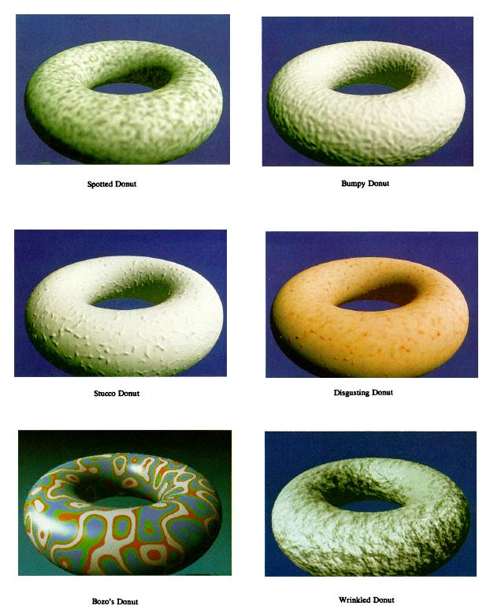
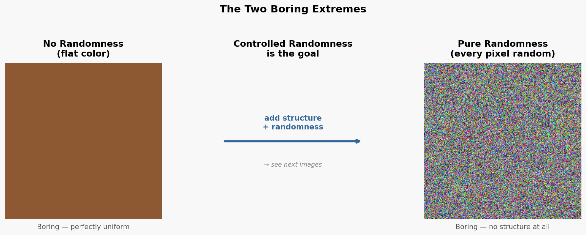
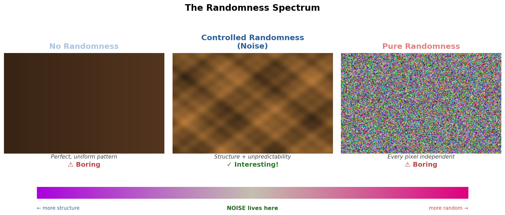
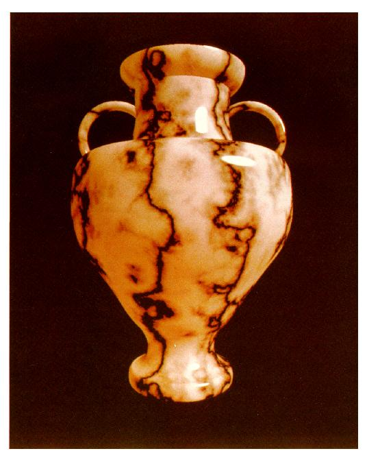
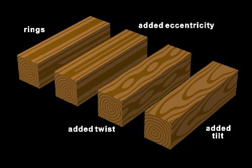
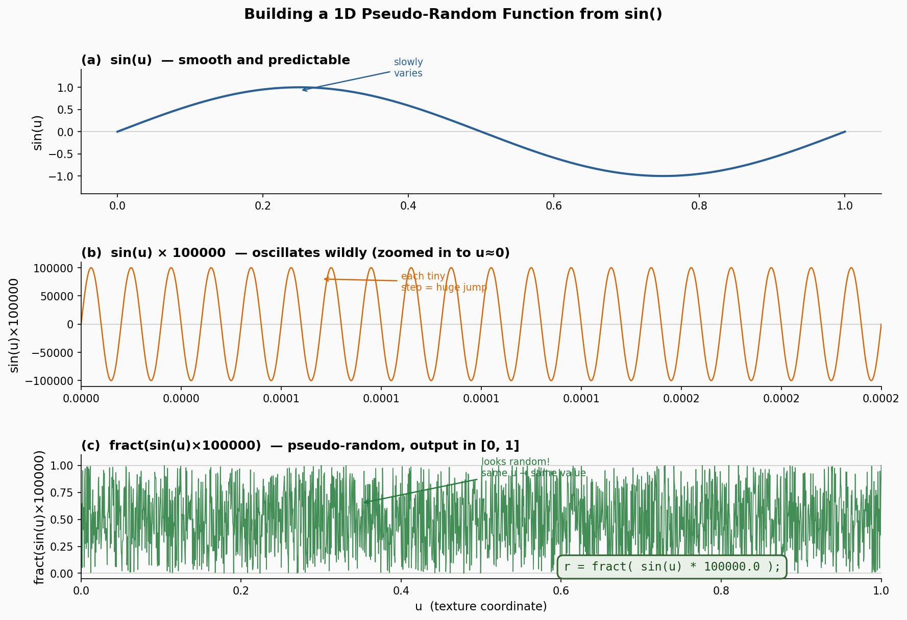
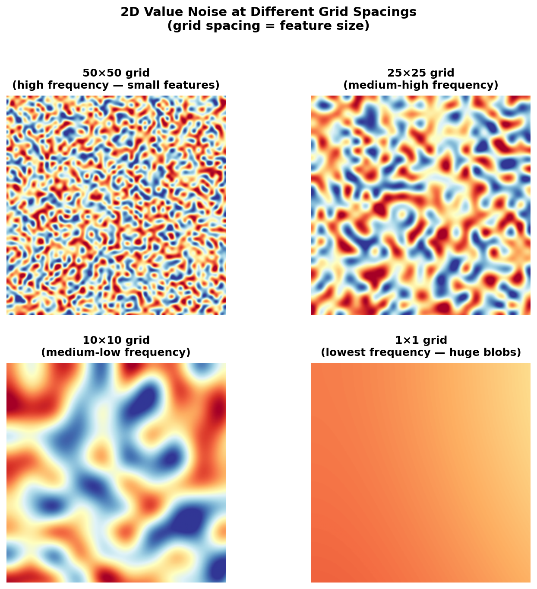
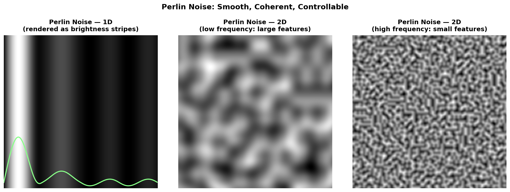
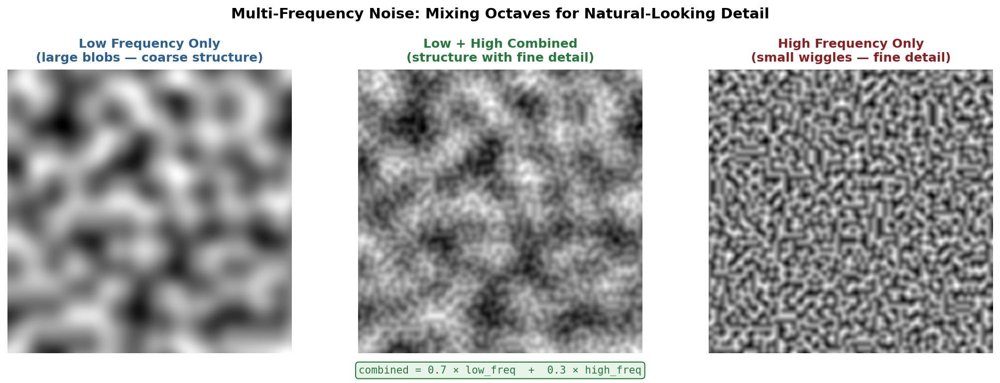

Page 25: Noise
Real-world textures often involve randomness. While there are some patterns, like checkerboards or polka dots, most things in the natural world have structure that is too complex for the eye to identify a pattern. If we look at the patterns of marble, of dirt on the floor, of the spacing of trees in a forest, etc., it looks random. Having randomness (unpredictability) is a key element of making interesting-looking textures.
The randomness we need for computer graphics isn’t completely random. We need it to be repeatable and controllable. If we make a pattern for marble, it needs to have the correct “structure” so it looks like marble (each position is not completely independent), and it needs to be coherent (the marble should be the same if we redraw things on each frame).
This idea of controlled randomness is called noise and it is a key element of computer graphics. The most obvious uses are in creating procedural textures, but it also comes up in creating imperfect geometry, varying motion, realistic lighting, and a host of other applications where we want some of the unpredictability that makes the real world interesting.
Using noise has two key parts: the mathematical aspects of generating these “pseudo-random” numbers, and the artistic aspects of how we control that randomness to use it to make interesting patterns. And then there is the minor detail of actually putting noise into our shaders.
On this page, we’ll discuss the intuitions behind the mathematics: the better you understand the intuitions, the more likely you are to be able to do the artistic aspects of using noise effectively. On the next page, we’ll talk about some practical issues in using noise in class, and give you the opportunity to try using it yourself.
This page is taken from a lecture video. The transcript was given to AI to turn into a draft, which was manually edited. The AI even wrote programs to reproduce the images in my slides (and I added some other images).
Some History
Ken Perlin developed the key concepts of modern noise functions. Importantly, he not only provided the first practical noise functions, but also had the good artistic sense and taste to show how effectively they could be used, inspiring everyone else. His initial 1985 paper An Image Synthesizer even showed how this fit nicely into a systems-level design.
{kind=link}

Example uses of noise from Perlin’s 1985 paper. From a web library.
Over the years, he is responsible for a series of different ways to generate noise. The naming can be confusing; Perlin Noise generally refers to his original concept, and the later versions (that he also invented) usually are referred to by different names. The history is further complicated because some of the versions were protected by patents.
Understanding Noise
Why do we want randomness? Because regular patterns look boring. Think about what a checkerboard looks like when every square is a perfect, uniform color — it reads immediately as a mathematical pattern. In the real world, materials like wood, stone, clouds, and skin have visual complexity that feels random. The tree grew a certain way to produce those grain patterns; the rock formed under pressure to make those streaks; clouds formed according to fluid dynamics. The underlying causes are real and physical, but the complexity is so great that the result seems random. That apparent randomness is what makes these materials look interesting and believable.
The trick to noise is that it is not random; it needs to be coherent and controllable.
The key ideas:
- We need it to be pseudo-random so we get the same result every time. We define the noise as a function over some domain (say 1D or 2D), for example in 1D. If we ask the same u value, we get the same answer each time. However, for different u values, we expect unpredictable differences.
- To be controllable we define the functions so that they have controlled frequency: they only “wiggle” at the rate that we specify.
The goal, then, is controlled randomness: not too perfect (boring), and not too chaotic (also boring). We want structure combined with unpredictability.
{kind=link}

The two boring extremes: a perfectly flat color (left) and pure white noise where every pixel is independent (right). Neither is interesting — the goal is controlled randomness in between. Image generated by Claude.
On the right, things are “too random”; they change so much that they can’t be controlled. Every pixel being different is a problem.
With shaders, every vertex is computed independently, and every fragment is computed independently. We compute each one completely separately, which is fine for performance because the GPU does all this work in parallel. But it means we need coherence: pixels near each other need to get the “same randomness”.
What Noise Actually Is
Noise has two key properties that distinguish it from true randomness.
1. Pseudo-random. A noise function has a pattern, but the pattern is so complex that the eye cannot detect it. The crucial word is “deterministic” — given the same input, you always get the same output. This means our texture is stable across frames, and two fragments at the same position will always compute the same value.
2. Structured. We can control the properties of the randomness that we care about. In particular, we want nearby inputs to produce nearby outputs — we want coherence, so that neighboring pixels aren’t wildly different. We can also control the frequency (how fast the pattern changes) and the overall character of the variation.
{kind=link}

The randomness spectrum. Flat color and pure white noise are both visually uninteresting for opposite reasons. Noise — structured, controlled randomness — lives between the two extremes and is where interesting visuals come from. Image generated by Claude.
Historic Examples
The person most responsible for developing practical noise for computer graphics is Ken Perlin, who worked on the film Tron in the early 1980s. He faced the problem that artists couldn’t hand-paint every marble surface — he needed a way to generate convincing material textures procedurally at scale. His insight was that natural materials like marble have structure (veins run in directions, the scale of variation is controlled) but also apparent randomness (you can’t predict exactly where a vein will be or how it will curve).
{kind=link}

Marble vase from Perlin’s 1985 paper. From a web library.
Perlin’s approach turned out to generalize far beyond marble. Simple geometric objects — a checkerboard, a sphere, a solid-colored object — immediately become more visually interesting when small amounts of noise are mixed into their color or surface detail. The smoke-like misty variation in a scene background, the variation in a wood grain, the subtle mottling in a painted surface — all of these come from controlled noise.
Wood is a particularly instructive case. The underlying structure of wood is concentric rings (the tree’s annual growth). If you render only that ring structure — perfectly circular, perfectly regular — it doesn’t look like wood at all; it looks like a mathematical diagram. The trick is to add just a bit of randomness to the rings: vary their eccentricity slightly, add a gentle twist along the length, tilt them a little. Each of these variations is small, but together they produce a result that reads convincingly as real wood grain.
{kind=link}

Demonstration of how noise makes wood. From Marc Olano’s SIGGRAPH 2002 course notes.
Building Noise: Three Key Ideas
To understand how noise is constructed, start with a 1D case — it’s easier to visualize, and the extension to 2D works the same way.
Imagine we want a function r = noise(u) that maps our texture coordinate u to a value in [0,1]. We want this function to be:
- Deterministic (same
u→ same output) - “Random-looking” (you can’t predict the output from the input)
- Coherent (nearby
uvalues produce nearby outputs — no wild jumps)
Idea 1: A Pseudo-Random Function
A common trick for a quick pseudo-random scalar in GLSL is:
|
|
The idea: sin(u) is a smooth, slowly-varying function. But, if we take some digits from the middle of number, these jump all over the place, without any predictable patern. Therefore, we take fract() (the fractional part) to keep the result in [0,1] after multiplying by a large number (to grab digits from the farther in the sequence). The result changes wildly for even tiny changes in u, so visually it looks random. There are many better pseudo-random functions out there — this is pedagogically simple, not production quality.
{kind=link}

Building a 1D pseudo-random function. (a) sin(u) varies smoothly and predictably. (b) Multiplying by 100000 causes the sine to oscillate so fast that a tiny change in u produces a completely different value (shown here zoomed in near u=0). (c) Taking fract() keeps the result in [0,1] and the output looks random — but it is fully deterministic. Image generated by Claude.
This generates pseudo-randomness, but there is no coherence. A tiny change in u can lead to an arbitrary change in the output. So, not only is the pattern boring (very thin stripes), if the pixels shift even a little bit, the U values will be slightly different, and the texture changes completely. In fact, when you apply this to a triangle, the slight errors in how the sides of the triangle line up can cause artifacts.
Here we apply that function as a texture (using the u value, and holding v constant).
This is a form of aliasing. The pseudo-random function has such high frequency that we’re critically undersampling it — small changes in the sample location produce wildly different values. We can use this as a feature (since every measurement is effectively random).
Idea 2: Discretize (Sample at a Grid)
The solution is to slow down the change. Instead of evaluating the pseudo-random function at every possible u value, we sample it only at a set of evenly-spaced integer positions. For example, if we want 40 “noise bands,” we evaluate the function only at u = 0, 1, 2, ..., 39 (or equivalently, we quantize u * 40 to the nearest integer).
|
|
Now every fragment within the same band gets exactly the same value. The result is a set of bands of varying gray values — structured randomness, where the pattern stays stable as the surface moves.
Think of this as controlling the frequency of the noise. More bands = higher frequency = finer pattern. The choice of how many bands (or equivalently, how many samples per unit) determines the “scale” of the noise features.
The frequency control is important: it allows us to control the kind of noise. Do we want big areas or small areas?
Idea 3: Interpolate to Smooth
Flat, constant bands look artificial — notice the hard edge where each band transitions to the next. The fix is to interpolate between the pseudo-random values at neighboring sample points.
For each fragment, find which two sample points it falls between, look up the pseudo-random value at each endpoint, and mix between them based on the fractional position within the interval. Use a smooth interpolation function — a cubic or smoothstep — rather than linear interpolation, to avoid the gradient kinks you’d get at the sample points.
|
|
The result is a smoothly-varying noise function that changes continuously but unpredictably.
So, we can create a “random” function that is unpredictable at the scale of the frequency, but coherently changes between these random values. This demo lets you see the effect of the number of bands (frequency).
This is a very simple form of 1D noise. In practice, we use a better pseudo-random function and better interpolation.
Extending to 2D
The 1D construction extends naturally to 2D. Instead of a line of sample points, we have a grid of sample points, each with its own pseudo-random value. For a 2D noise function, we need a pseudo-random function of two inputs:
|
|
Given a UV position, we find the four surrounding grid points, look up a random value at each, and bilinearly (or bicubically) interpolate between them.
{kind=link}

2D value noise at four grid spacings. The grid spacing directly controls feature size: a 50×50 grid produces many small features (top left), while a 1×1 grid produces a single smooth gradient spanning the whole image (bottom right). Choosing the right frequency is the first step in dialing in the noise to match a natural phenomenon. Image generated by Claude.
The grid spacing controls the spatial frequency of the features. A fine grid produces small, rapidly-changing features. A coarse grid produces large, slowly-varying blobs. By choosing the grid spacing, we choose what “scale” of variation we’re generating.
Perlin Noise and Better Approaches
The simple approach above gives us functional noise, but it has several limitations. The pseudo-random function based on sin has visible patterns if you look closely. The interpolation exposes the underlying grid structure. And we’ve only shown it at one frequency at a time.
Ken Perlin’s approach (and modern variants of it) address all of these issues. The core ideas:
Better pseudo-randomness. Rather than using sin(), Perlin noise uses pre-computed tables of gradients at each lattice point. Modern GPU-friendly variants use hash functions with better statistical properties — the patterns are truly invisible.
Better interpolation. Perlin’s improved noise uses a specific quintic polynomial for interpolation that has zero first and second derivatives at the lattice points. This prevents any visual artifacts at the grid locations.
Tileable. Good noise implementations are designed to tile seamlessly — the pattern repeats, but in a way that’s hard to see. This matters for texture atlases and when you want a noise pattern to wrap around an object.
Multi-dimensional. Perlin noise works efficiently in 1D, 2D, and 3D. 3D noise is particularly useful for “solid textures” — procedural materials where the pattern is defined throughout 3D space, so when you cut a surface at any angle, you see a consistent cross-section of the material (like cutting through real marble or wood).
{kind=link}

Perlin noise in 1D and 2D. Left: 1D Perlin noise rendered as horizontal brightness stripes, with the underlying 1D curve overlaid in green — note the smooth, continuous transitions. Center: 2D Perlin noise at low frequency, producing large organic blobs. Right: the same noise at higher frequency, producing fine-grained detail. Changing the frequency scale is the primary knob for controlling feature size. Image generated by Claude.
In practice, you don’t need to implement Perlin noise yourself. Three.js has noise built in. The webgl-noise and psrdnoise libraries provide excellent open-source GLSL implementations that you can drop into your shaders.
Multi-Frequency Noise
A single frequency of noise produces patterns that look uniform — every feature is the same size. Natural materials, however, have variation at many scales simultaneously. A mountain has large-scale shape (the mountain), medium-scale roughness (rocky ridges and valleys), and fine-scale detail (individual rocks, dirt texture). Clouds have large billowing forms and small wispy edges.
The technique for achieving this is straightforward: add noise at multiple frequencies together, typically with decreasing amplitude as frequency increases. This is often called fractal noise or turbulence, and the different frequency contributions are called octaves. Technically, an octave is a doubling of frequency.
|
|
The result has large-scale structure dominated by the low-frequency component, but with medium and fine details overlaid. The ratio of amplitude between successive octaves is often called persistence — lower persistence means the fine detail is weaker relative to the coarse structure.
{kind=link}

Multi-frequency noise mixing. Low-frequency noise alone (left) gives large, smooth blobs. High-frequency noise alone (right) gives fine-grained detail with no large-scale structure. Adding them together (center, weighted 70% low + 30% high) produces blobs with textured interiors — a much more natural and interesting appearance than either component alone. Image generated by Claude.
Using Noise
How to Use Noise in Practice
Once you have a noise function, the question is how to put it to work. Here are the main patterns:
Noise as color variation. Blend between two colors based on the noise value, or shift the hue/saturation. A solid wood-colored surface, modified by noise to vary between light and dark grain, immediately reads as more realistic than a flat color.
Noise as a pattern input. Rather than coloring directly, use noise to perturb an input to some other function. For the wood grain example: compute the radius from the tree’s axis, add a noise value to it, then use sin(radius + noise) to get the ring pattern. The rings are still rings, but they wobble naturally.
Noise as displacement or bump. Use noise to perturb a surface normal (bump mapping) or to offset a texture lookup. This adds apparent surface detail — the surface looks rough or textured — without changing the actual geometry.
Noise to break up motion. When objects move, adding noise to their trajectories or to their animation parameters prevents them from looking mechanical. A firefly that wanders with noise-based offsets reads as alive; one that follows a sine wave reads as a toy.
Mixing frequencies. For most natural-looking results, mix at least two or three octaves of noise. Start with a low-frequency component that provides the large-scale structure, then add a higher-frequency component at lower amplitude to add fine detail. Adjust the frequencies and amplitudes until the result matches the natural phenomenon you’re trying to simulate.
It is an art. There’s no formula for the right combination of frequency and amplitude. You tune it the same way a sculptor works clay — iteratively, by eye, until it feels right. Looking at reference images of the real material helps: notice what scale the features are, how much contrast there is between light and dark areas, whether the features are round and blobby or elongated and streaky.
An Example
How do we turn Perlin noise into something meaningful? Again, it’s an art, and requires experimentation. Here is an example that Gemini made:
I had it explain what it did:
To turn abstract, mathematical noise into a convincing natural feature like white clouds in a blue sky, we apply three core concepts from graphics programming: Fractal Summation, Thresholding, and Color Blending.
1. The Core Color (The Sky)
We begin with a solid base. A simple vertical gradient, moving from a deep blue at the top to a lighter, hazier blue at the horizon, provides a realistic foundation.
|
|
2. The Cloud Texture (fBm Noise)
A single layer of “classic” Perlin or Simplex noise looks like soft, blurry lumps. It lacks the “wispy” detail of real vapor. To fix this, we use Fractional Brownian Motion (fBm).
We “stack” multiple octaves of the same noise function. Each successive layer has:
- Higher Frequency: More small-scale detail.
- Lower Amplitude: Less influence on the overall shape.
This creates high-frequency “wispiness” that sits on top of the low-frequency “mass” of the cloud.
In short, fBm (Fractional Brownian Motion) is the process of “stacking” multiple layers of noise to create natural complexity. We take a smooth base shape and add smaller and smaller details on top of it, much like how a mountain has large peaks, smaller crags, and tiny pebbles.
By doubling the frequency (detail) and halving the amplitude (strength) in each step, we simulate the “self-similarity” found in clouds, terrain, and fire.
Here is the specific loop used in the cloud example:
|
|
3. Shaping and Thresholding (Defining “Puffs”)
Raw fBm noise is a continuous grayscale signal (outputting values from 0.0 to 1.0). If we simply colored it white, the sky would look like a flat gray fog.
To define the cloud edges, we apply Thresholding. We “cut away” the lower noise values (representing clear air) and keep only the highest peaks (representing dense vapor). We use the smoothstep() function for this because it provides a soft, non-linear transition, mimicking how light scatters at the soft boundary of a cloud.
|
|
4. The Final Blend
We now have our base skyColor and a grayscale density mask. The final step is to define the color of our clouds (pure white) and use the density mask to blend them into the sky.
|
|
Summary of the “Thinking” Process
| Step | Goal | Mathematical Tool |
|---|---|---|
| Environment | Create a sense of atmosphere. | Linear Gradient (mix) |
| Turbulence | Create natural-looking complexity. | Fractal Summation (fBm) |
| Volume | Define where the “object” begins and ends. | Thresholding (smoothstep) |
| Animation | Simulate wind and movement. | Coordinate Offsetting (uv.x += time) |
Putting It Together: Impressive Results
When used well, noise transforms simple geometry into visually compelling renderings. Ken Perlin’s noise-based approach enabled the generation of entire natural environments — terrains, skies, water — that would have been impossible to model by hand. The mountains in a procedurally-generated landscape use multi-frequency noise for elevation, and then layer on additional noise to determine where snow falls, where rock faces are exposed, and where vegetation grows.
The takeaway is this: noise is not just a trick for making textures look rough. It is a fundamental tool for procedural content generation — the way to turn mathematical patterns into things that look as if they emerged from natural processes. A shader that uses noise well can produce materials that are indistinguishable from photographs.
Implementing Noise
While the noise functions are simple in concept, the details of the implementation can matter a lot. Therefore, it is often best to use a standard implementation where someone has thoroughly thought through all of the details. An implementation is built into three.js (for TSL). Good, open source implementations are available for standard shading languages in the webgl-noise and psrdnoise libraries.
If you want to use noise in GLSL, you pretty much need to copy one of the open source implementations into your shader.
Summary
- Shaders cannot use true randomness: each frame and each fragment is independent, making truly random values unstable and incoherent.
- Noise = pseudo-random + structured: looks random but is deterministic and coherent.
- The basic construction: sample a pseudo-random function at evenly-spaced grid points, then interpolate smoothly between them. Grid spacing controls frequency; interpolation quality controls smoothness.
- Perlin noise is the classic implementation; modern variants (simplex noise, etc.) are more efficient on GPUs and have better properties.
- Multi-frequency noise (fractal/turbulence) combines several octaves to produce detail at multiple scales simultaneously.
- In practice: find a quality implementation, mix frequencies to taste, and use noise to break up the perfect regularity of procedural patterns. The results are worth the effort.
Next: Page 26 - Procedural Texture Examples